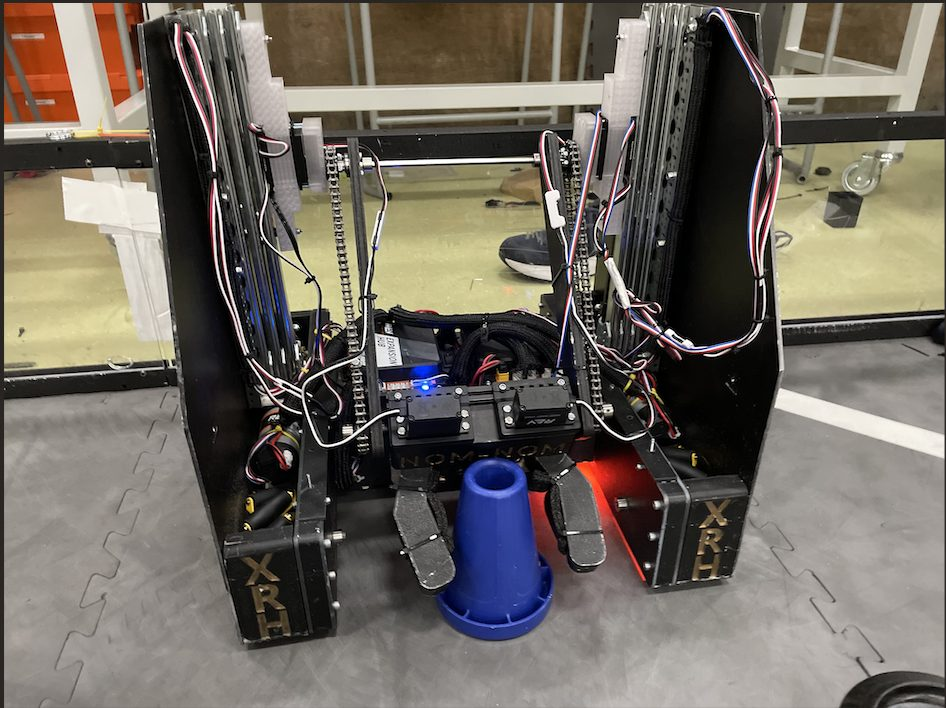
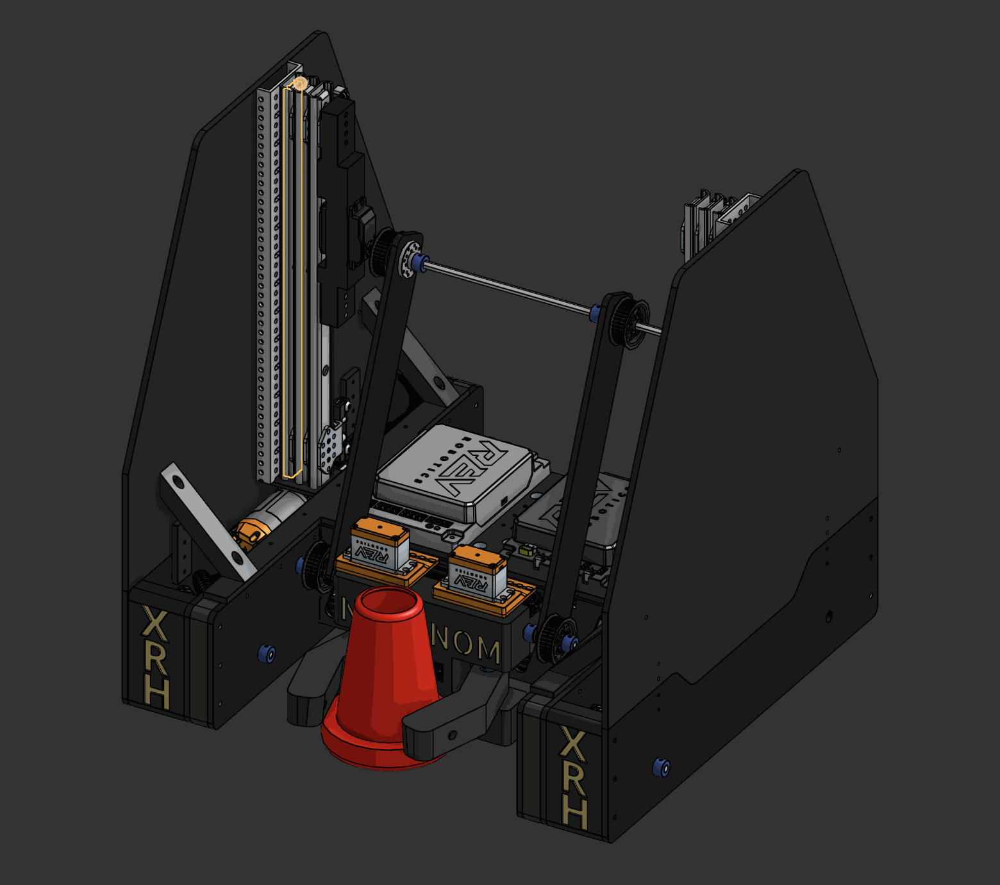
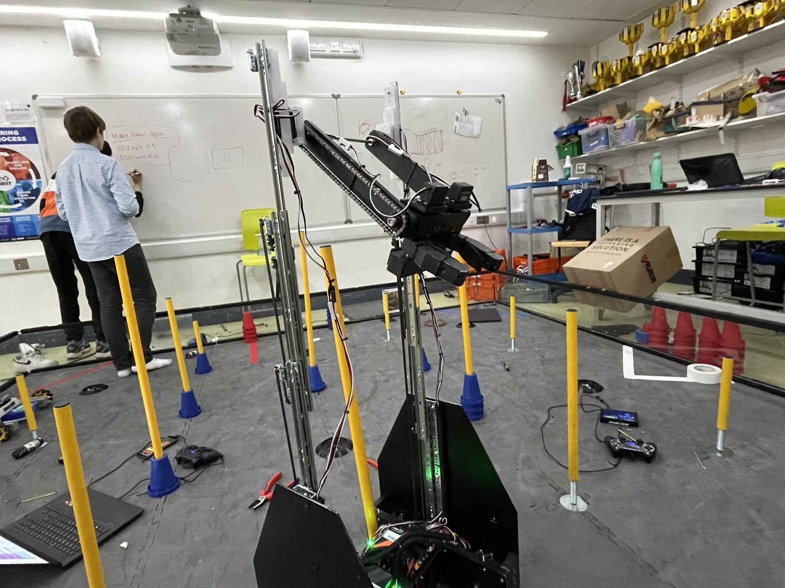
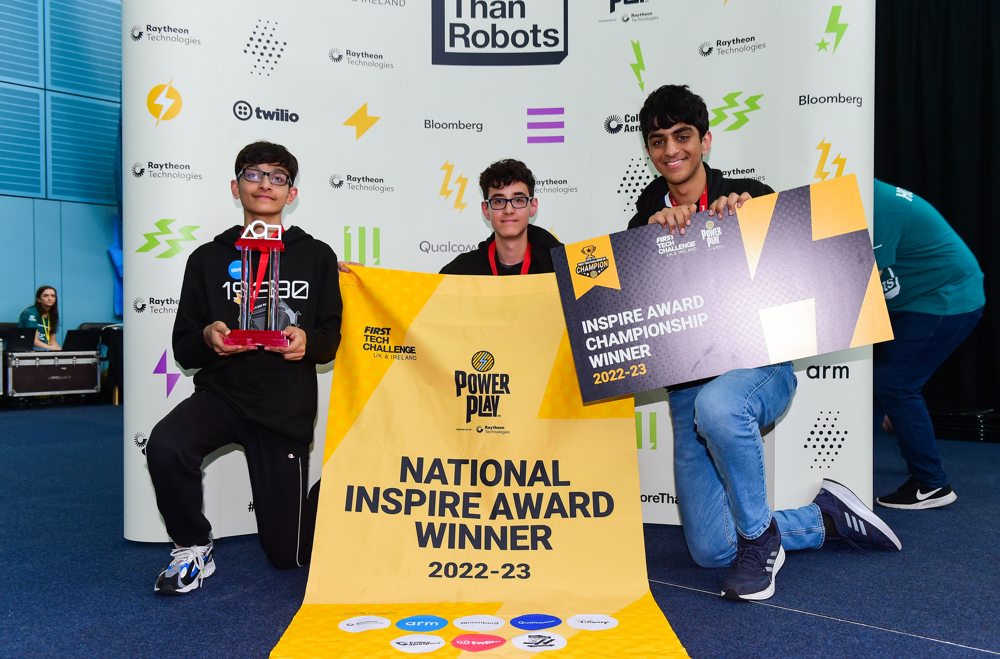
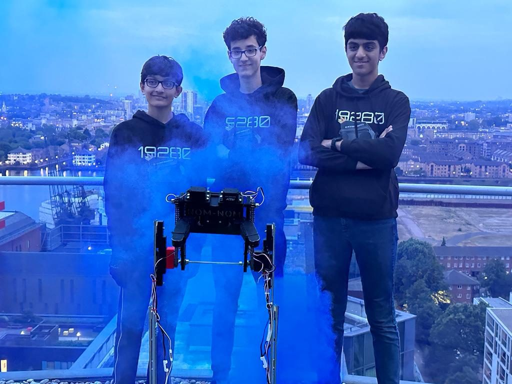

Power Play was won on cones: scoring them onto junctions of varying heights, with ownership bonuses for finishing on top. Our robot was built around a pass-through architecture — intake a cone on one side, score it on the other, never rotate between stack and junction.
Cutting that turn out of every cycle was the single biggest contributor to our cycle times — and the season ended with the UK National Championship.

Taller junctions scored more, and owning a junction at the buzzer scored again — so our match plan was high-junction cycles for the bulk of the match, then an endgame sweep to claim ownership across the field.
Every mechanism served the cycle plan: collect a cone at the stack, drive straight backwards, place it — same orientation, opposite face of the robot, no rotation. As Design Lead I owned the full robot CAD and mechanism design.

The pass-through requirement — pick up on one face, deposit in the same orientation on the other — left two candidate mechanisms: a differential arm or a virtual four-bar. Given the differential's complexity and the span to cover between the two slide sets, the virtual four-bar won on simplicity, packaging and reliability.
The junction-capturing drivebase completed the system: driving at a pole naturally guided it to where the cone would fall, removing precision alignment from every cycle.



The only failure of the entire competition was a stripped servo horn. The four-bar was driven directly by its servos, and after a mid-tournament code change the two servos briefly drove in opposite directions — full stall torque went straight through the horn and destroyed it, taking out high-junction scoring for the rest of the event.
A geared transmission would have limited the torque reaching the horn and likely let us walk away from the same mistake unscathed. That lesson — never drive a mechanism directly off a servo — permanently changed how we design drive interfaces on wear parts, and carried straight into the next season's robot.
The complete assembly STEP, CAD screenshots and season footage are open on GitHub.
View the repository ↗ Next season: Centerstage →